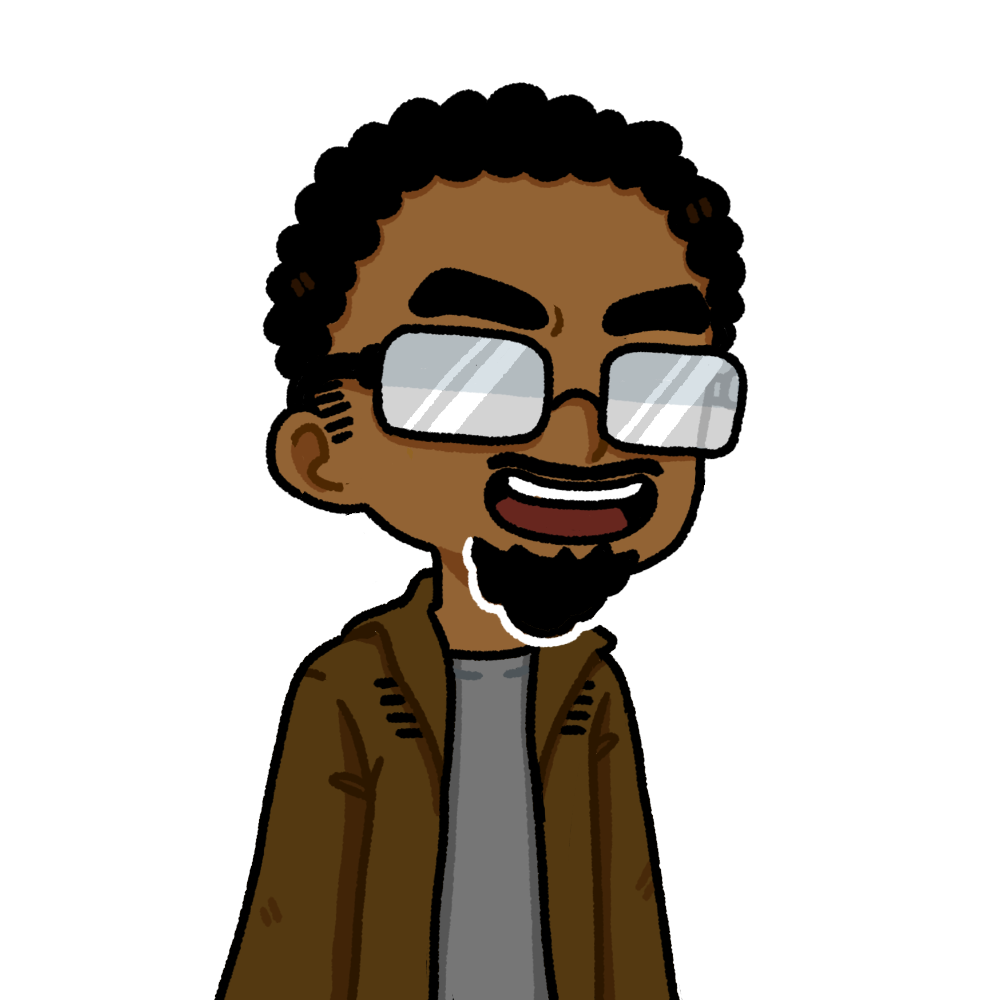

 Bon, ça suffit ces conneries. Génie ! Tu m’appartiens ! Tu n’exaucera le vœux de personne d’autre ici que le miens ! Docteur, mettez Guillaume et Thibault en cage avec les autres.
 J’y fonce !
J’y fonce !
Quant à vous le génie, je vais faire mon vœux alors écoutez bien.
Trop tard.
Pardon ??
L’Être sage a fait son vœux, et il passe en priorité sur vous.
Mais… Je pourrais faire un veux une fois que vous aurez exaucez le siens ?
Non. Vous avez usé les trois vœux disponibles, et même si normalement je revient chaque année, celle-ci, de part l’action de l’Être sage, est ma dernière. Je n’entrerais plus jamais en contacte avec votre monde.
Mais… Mais… C’est de l’arnaque !
À présent il me faut une âme fictive si vous voulez revoir votre ami réel.
 Ivan…
Ivan…
 Je sais.
Je sais.
Ivan sera Xydoé dans ses bras, puis regarda son doux visage. Lui qui n’avait de sentiments que pour Léopold, se retrouvais à devoir sacrifier l’objet de ses fantasmes secret, mais par dessus tout, une amie remarquable. Il la desserra, et lui colla un bisous sur le front.
Xydoé, merci pour tout.
 Je n’ai rien fait Ivan, c’est vous qui m’avez protégée…
Je n’ai rien fait Ivan, c’est vous qui m’avez protégée…
Le génie attrapa alors Xydoé par le bras, et l’amena vers le portail.
Attendez… C’est quoi ça ?
Quoi ?
La main là, y a un bras qui sort du portail !
Oh mon dieu ! Léopold j’arrive !
Sans hésitation, Ivan se jeta vers le portail, poussant sans ménagement le Génie et Xydoé, pour attraper le bras tendu qui semblais chercher une accroche.
Cette fois aide moi Samy ou je crame ta moto !
À deux, ils tirèrent petit à petit le corps de Léopold en dehors du portail. Ce dernier semblait endormis, vaincu par la fatigue, mais il respirait encore.
Ma parole, c’est la première fois que je vois quelqu’un passer de l’autre côté de la brèche sans mes pouvoirs. Quoi qu’il en soit, vous pouvez garder la petite, l’échange ne tiens plus puisque je n’ai guère eu le temps de l’aider.
Donc la brèche restera ouverte ?
Oui. À vous de ne pas la solliciter. Mais je sais que je peux vous faire confiance Être sage. Protégez votre monde du miens, et arrêtez les fou qui veulent en tirer profits.
Je ferais de mon mieux !
Le Génie lui sourit une dernière fois, puis disparut dans un nuage de fumée. Ivan, encore bouleversé, se jeta dans les bras de Léopold, pour lui faire un câlin des plus passionné.
Alors vous croyez que je vais vous laisser détruire tout mes projets, et repartir comme ça !?
Putain je l’avais oublié lui.
Jojo ! Attaques !
Avant qu’il n’ai eu le temps de voir quoi que ce soit arriver, Ivan se pris un coup de poing l’envoyant valser au centre de la terre battus, seul vestige du chapiteau.
 Ivan !
Ivan !
Léopold couru vers Ivan, mais ce dernier reçu un second coup, l’envoyant dans les gradins. Se retrouvant alors devant la montagne de muscles qui composait Jonathan, Léopold bondi afin de saisir son unique chance de frapper Jojo. C’est ce qu’il fit, et Jonathan recula d’un pas. Il mis à son tour un coup à Léopold, qui l’envoya dans ce qu’il restait d’un placard à balais. C’est alors que Samy, qui suivais le combat depuis un lieu sur, aperçu entre le tas de balais qui recouvrait Léopold, une magnifique cireuse flambant neuve ! Il eu alors une idée foireuse, qu’il s’empressa d’appliquer. Il courut redresser Léopold tandis que Jonathan cherchais Ivan dans les gradins. Un fois Léopold debout sur la cireuse, Samy la mis en marche à pleine puissance, faisant tourner Léopold à grande vitesse. Au bout d’une certaine vitesse, le câble lâcha et Léopold fut projeté tel une torpille. C’est alors qu’il mis à Jojo le coup de boule du siècle, le laissant s’effondrer lourdement au sol, tel un gladiateur vaincu. Léopold ne perdit pas de temps, et courut retrouver Ivan, coincé entre deux étages de gradins.
Ivan…
Léopold…
Ivan je…
Léopold…
Oui bah laisse moi finir !
Léopold… T’as ton genou sur mes couilles…
Oh merde pardon ! Voilà, ça va mieux ?
Un peu o…
Léopold attrapa la tête d’Ivan, et sans un mot de plus, il l’embrassa langoureusement, sous les sifflements gênés de Samy. Ce dernier remarqua cependant Matéo, qui fuyais discrètement.
Ça va ? Tu le dit si on te dérange hein !
Ah euh… Bah c’est à dire que je… Jojo, attaques !!
Mais Jojo ne répondit pas.
Et merde…
On ne bouge plus !
What the fuck pourquoi y a un putain de tank ?
 On l’a récupéré à un militaire qui en était sorti pour une pause pipi.
On l’a récupéré à un militaire qui en était sorti pour une pause pipi.
Et non seulement on a un tank, mais on a aussi ça !
Le docteur Friedmann sortie alors du tank une mitrailleuse gatling, volée lors d’un vide-grenier.
Donc je répète ; le prochain qui bouge je le change en passoire !
Ah Ha ! Je savais bien que je ne tomberais pas si facilement !
 C’était sans compter sur nous !
C’était sans compter sur nous !
 Et ouais !
Et ouais !
Hein ? Mais…
Sans pouvoir dire un mot de plus, Alexis et le docteur furent plaqués au sol et attachés. Antoine défonça la serrure de la cage d’un coup de poing, libérant les otages. Tous, se tournèrent vers Matéo, seul, au centre de la piste, sous une pluie battante.